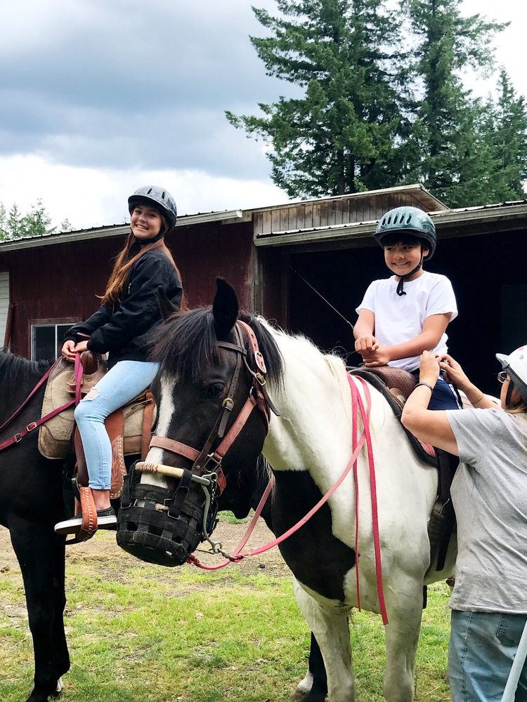

The guide
Meet your trail guide
Debie grew up in Washington and has been riding here for over forty years. She has helped clear and maintain a good many of the trails you’ll be on.
That’s the difference between a trail ride and a trail ride with her. She knows the terrain, and along the way she can name the native plants and the berries worth eating. Her own listing also describes fall outings built around wild mushroom and berry foraging; ask about the current seasonal plans.
The ranch is family-owned. There are only a few horses, so groups stay small and every ride is walk only — she specialises in confidence building, which is why so many of the reviews come from people who had never sat on a horse before. Missy, the ranch’s riding dog, turns up in a lot of riders’ photos.